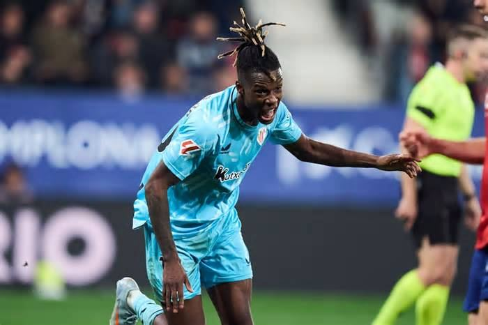

Athletic Club de Bilbao vs Real Madrid LALIGA game on ESPN Deportes: Livestream, TV channels, Spanish commentary coverage, kick-off time

How to watch the LaLiga match between Athletic Club Bilbao and Real Madrid, as well as the kick-off time and team news.
How to watch the LaLiga match between Athletic Club Bilbao and Real Madrid, as well as the kick-off time and team news.
Noticia publicada por Goal. Consulta el artículo original en Goal para más información.